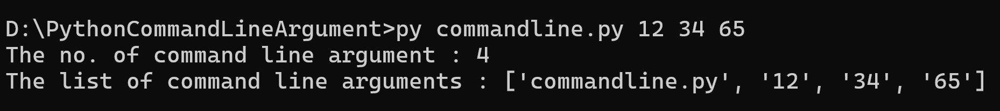

✬ Python File Handling : Python has several functions for creating, reading, updating, and deleting files .
⇛ The key function for working with files in Python is the open() function.
⇛ The open() function takes two parameters; filename, and mode .
⇛ There are four different methods (modes) for opening a file:
Note: Make sure the file exists, or else you will get an error.
✬ To open the file, use the built-in open() function.
✬ The open() function returns a file object, which has a read() method for reading the content of the file.
Example:
f = open("file.txt")
f1 = open("file.txt","rt")
f2 = open("file.txt","r")
print(f.read())
print(f1.read())
print(f2.read())
Output:-
Hello, guys how are you?
Hello, guys how are you?
Hello, guys how are you?
✬ Note: If the file is located in a different location, you will have to specify the file path, like this:
Example:
f = open("D:\\myfiles\welcome.txt", "r")
print(f.read())
✬ If your file is not exist or not found in the specific location. Then you will get Error.
Example:
f = open("file1.txt")
print(f.read())
Output:-
FileNotFoundError: [Errno 2] No such file or directory: 'file1.txt'
✬ Read Only Parts of the File:
⇛ By default the read() method returns the whole text, but you can also specify how many characters you want to return:
Example:
f = open("file.txt")
print(f.read(8))
Output :-
Hello, g
✬ Read Lines : You can return one line by using the readline() method:
Example:
f = open("file.txt")
print(f.readline())
Output:-
Hello, guys how are you? Line 1
✬ By calling readline() two times, you can read the two first lines:
Example:
f = open("file.txt")
print(f.readline())
print(f.readline())
Output :-
Hello, guys how are you? Line 1
Hello, guys how are you? Line 2
✬ By looping through the lines of the file, you can read the whole file, line by line:
Example:
f = open("file.txt")
for i in f:
print(i)
Output :-
Hello, guys how are you? Line 1
Hello, guys how are you? Line 2
Hello, guys how are you? Line 3
✬ The readlines() method returns a list containing each line in the file as a list item.
Syntax : file.readlines(hint)
Note:- Hint is Optional. If the number of bytes returned exceed the hint number, no more lines will be returned.
Default value is -1, which means all lines will be returned.
Example :-
f = open("file.txt")
f1 = open("file.txt")
print(f.readlines())
#Do not return the next line if the total number of returned bytes are more than 33
print(f1.readlines(33))
✬ Close Files : It is a good practice to always close the file when you are done with it.
Example:
f = open("file.txt")
print(f.readline())
f.close()
Note :-
Note: You should always close your files.
In some cases, due to buffering, changes made to a file may not show until you close the file.
Write to an Existing File :
To write to an existing file, you must add a parameter to the open() function:
"a" - Append - will append to the end of the file.
"w" - Write - will overwrite any existing content.
Example : Append content to the existing file. (By using : 'a')
f = open("file.txt","a")
f.write("Now the file has more content!")
f.close()
f=open("file.txt")
print(f.read())
Output :-
This is old text. Now the file has more content!
Example: Overwrite the content (Delete the all old content and add new content) (By using : 'w')
f = open("file.txt","w")
f.write("Woops! I have deleted the content!")
f.close()
f=open("file.txt")
print(f.read())
Output :-
Woops! I have deleted the content!
Example : Open the file with "a" for appending, then add a list of texts to append to the file:
✬ Note: If not in proper list then you will get error: TypeError:
f = open("file.txt","a")
f.writelines(["This text is added!", "by writeline method."])
f = open("file.txt","r")
print(f.read())
✬ "w": The file will be emptied before the texts will be inserted at the current file stream position.
Example :
f = open("file.txt","w")
f.writelines(["This text is added!", "by writeline method."])
f = open("file.txt","r")
print(f.read())
✬ The tell() method returns the current file position in a file stream.
Example: Return the current file position after reading the first line.
f = open("file.txt")
print(f.readline())
print(f.tell())
Output :-
Thisisline1
13
✬ The seek() method sets the current file position in a file stream.
✬ The seek() method also returns the new postion.
Example :
f = open("file.txt")
f.seek(4)
print(f.readline())
print(f.seek(4)) # Return the new position:
Output :-
isline1
4
✬ Python Command Line Arguments : Python Command Line Arguments provides a convenient way to accept some information at the command line while running the program.
⇛ To run a Python program, we execute the following command in the command prompt terminal of the operating system. For example, in windows, the following command is entered in Windows command prompt terminal.
Note 1: Command Line Arguments return in the form of List.
Note 2: The list elements are in string.
Q154) WAP to display number the list of command line arguments or length of command line arguments .
Solution:
from sys import argv
print("The no. of command line argument :", len(argv))
print("The list of command line arguments :", argv)
Output :
Q155) WAP to print all command line arguments only which is entered by user.
Solution:
from sys import argv
print("The list of command line arguments :", argv[1:])
Output :
python Q155.py 12 34 56 67
The list of command line arguments : ['12', '34', '56', '67']
Q156) WAP to print sum of all command line arguments only which is entered by user.
Solution:
from sys import argv
s=0
args = argv[1:]
for i in args:
s=s+int(i)
print("The sum of all arguments :", s)
Output :
python Q156.py 12 34 56 67
The sum of all arguments : 169
Labwork :
Q157) WAP to print 5 colors name by command line argument.
Hint :
python Q157.py Blue Black Red Yellow Green
Your color names are :
Your entered color 1 is Blue
Your entered color 2 is Black
Your entered color 3 is Red
Your entered color 4 is Yellow
Your entered color 5 is Green